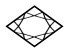
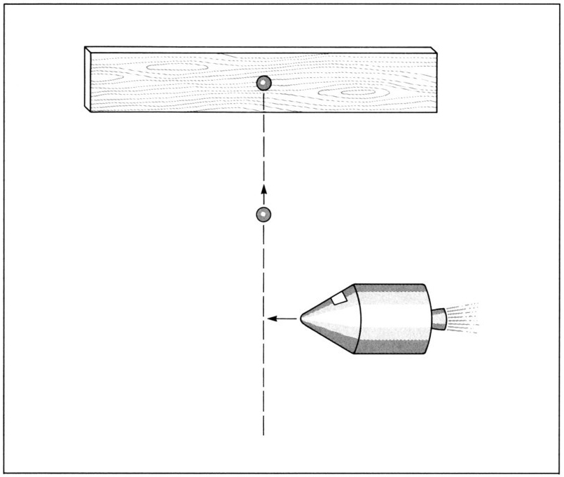
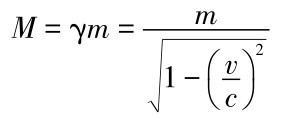
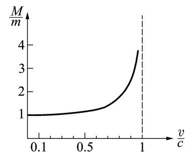
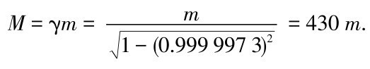
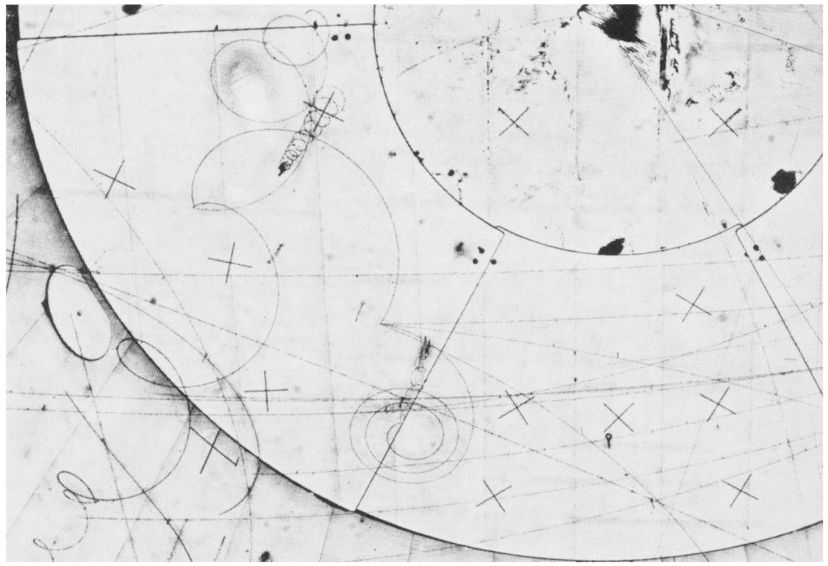

第十四章几天以来与我们相伴的是瑞士所享有的晴朗和煦的天气。我们星期日一早就启程了。我们到达拉克莱曼（日内瓦湖）险峻的堤坝，离沃韦镇不远。我把车停了一会儿，以便大家能在对面将阿尔卑斯山的全景一收眼底。我们的脚下深处，湖水在朝阳下波光粼粼。这个歇脚处给人们提供了欧洲最精美的景致之一。
牛顿看上去已经对旅行有些厌倦，但是罗讷谷通往马蒂尼的景色迷住了他。最后他转向爱因斯坦。[书ji分 享V 信jnztxy]
牛顿： 昨天你和哈勒尔暗示相对论有一些更令我惊奇之处，特别是关于物质的动力学方面。昨天夜里我试图从你们的暗示中有所领悟，可是我恐怕没有多少收获。既然你已经彻底修正了我对于时间和空间的定义，我想我的力学中的某些其他概念也需要做相当大的修改。让我们从质量的概念着手。我想知道相对论如何处置一个物体的质量，后者通常以克或千克为单位来测量。
爱因斯坦 （微笑着）：亲爱的艾萨克爵士，我太理解你了，你对自己的力学和动力学理论中的概念和定义感到没有把握。对这一点我不想细说，但是我向你保证，谈论一个物体的质量在相对论的框架下也是有意义的。事实上，在做了一个重要修正之后，你关于质量的思想在相对论里从根本上仍旧是正确的。
在牛顿和爱因斯坦谈话之际，我把车重新启动。他们继续讨论着相对论的方方面面。我们不一会儿就离开了高速公路，沿着日内瓦机场边缘而行，上了连接日内瓦城和CERN实验室的梅兰路。当我们到达这幢综合性建筑的正门时，我把车泊好，领取了招待所房间的钥匙。几分钟之后，我们沿着一条设有安全警卫的路进入大院。
爱因斯坦 （看着车窗外）：这就算是一个物理研究所？在我那个时代，所有的实验物理设备都可以轻而易举地安装在几间屋子里。这个地方看起来更像一个工厂而不像做研究的实验室。居然有人能在这么庞大的地方做研究？
对我来说，研究首先意味着不受干扰地思考和工作的自由。我很难想象这个摊子没有一个说一不二的官僚机构的话怎么运作。最起码，它需要长期规划才行。然而，依我所理解的方式而言，研究是不能做长期规划的。你需要思想和想象——每个人都明白这些是不可规划的东西。一旦时机到了，它们会自发地出现，而且常常是有心栽花花不开，无意插柳柳成荫。
哈勒尔： 毫无疑问，在CERN这个地方，各个实验要提前很久做好计划，研究工作才能开展起来；这是我们这个时代的发展趋势。除此之外，我们只有通过仔细的规划才能使研究费用处于控制之中——而这当然是必要的。像CERN这样的研究机构毕竟是由纳税人的钱资助的。做物理学实验不再可能靠19世纪法拉第时代那种方式了。实验会持续几个月，有时几年；而物理学家通常专攻一个项目，这并不一定是坏事。许多科学家认为以合作组的方式工作是有利的，合作组包括来自不同国家不同大学的更小的团队。另一方面，爱因斯坦先生，你虽然像大多数理论家那样不喜欢在一个大组里面工作，那也没什么问题。如果你在CERN工作，将不会有任何官僚约束强加于你。即便是在这么大的研究机构，你也有充分的自由依自己的兴趣做研究。也许你在伯尔尼专利局还没这么多自由呢。
爱因斯坦： 我亲爱的哈勒尔，算你走运，我那专利局的老板没听到你的话。顺便提一句，他也叫哈勒尔，弗里德里希·哈勒尔（Friedrich Haller）；而我对他没有任何抱怨。他给了我所需要的所有自由。和呆在大学里面相比，我自然有更多空闲从事我所感兴趣的研究；大学里的年轻科学家们被迫要在短期内发表很多论文——“不发表就发臭”。今天的大学教师几乎没有时间阅读他们的同事的论文。而且你也知道，那样制造出来的论文是什么样子——多半都是应该直接进废纸篓的东西。
我们的谈话被牛顿打断了，他指向我们刚才经过的一块街牌：爱因斯坦路。爱因斯坦并不怎么在意。
爱因斯坦： 亲爱的牛顿，我希望你不会嫉妒。显然我的理论在这里是有用的。尽管如此，我打赌这个地方还有一条牛顿路！哈勒尔，对不对？
我没有回答，而是慢下来指指我们右侧的街牌：牛顿路。牛顿对此显然很得意。我隐约记得他还是悄悄地估算了一下“他的”街道的大小，那是一条通往实验室高楼的旁路；并且他把它同更长更宽的爱因斯坦路做了比较。不一会儿我们到了招待所，我们的旅行也告一段落。
我们很快入住进去。赶上是星期日，我们决定利用闲暇前往附近的侏罗山脉一游。从CERN开一个小时的车经由法国小镇热克斯，顺着通往福西耶山口的盘山路上行，我们到达了侏罗高原。我们步行穿过阿尔卑斯牧场，很快来到侏罗山脉的边缘，峭壁之下便是日内瓦盆地。借助于这一有利地形，日内瓦城、日内瓦湖和远处法国境内的阿尔卑斯山的壮观景色便一览无余。我们坐下来继续我们在车里就已开始的讨论。
牛顿： 爱因斯坦，现在是你做解释的时候了。在相对论里面我们怎么处理质量呢？把质量的概念与你的理论结合起来必定很困难。我记得很清楚我在我所处的那个年代是怎样定义一个物体的质量的。倘若物质由原子组成，而原子——根据我们现在的观点——由原子核和电子组成，那么我假设我们可以把一个宏观物体的质量简单地看作它的原子核与电子的质量之和。这样我们就可以局限于只考虑电子和原子核的质量了。
现在假设我用下面山谷里的CERN加速器来加速一个质子——氢原子的原子核。我们已经知道时间和空间的相对性不允许我们把质子的速度加速到超过光速。我确信，之所以做不到这一点还必定存在一个动力学理由。然而，我看不出会是什么理由，倘若在相对论中粒子质量的概念不做改变的话。原则上把质子加速到更高的速度应该是可能的。如果加速过程持续足够长时间，在某一点应该达到或超过光速。另一方面，这是做不到的，因为光速是不可超越的。所以这里面有问题。我觉得粒子的质量在高速下也许改变了；更准确地说，我认为质量也许以这样一种方式增大了，它使得粒子即便在理论上也不可能被加速到超过光速。
爱因斯坦： 你具有迅速把握事物的本质的能力。还记得我今天早上告诉过你，你的质量概念稍加改变就可以很自然地用于相对论。这一改变正是你刚才猜想到的效应。在很高的速度下，粒子的质量增大了，而理论精确地表述了它是怎样增大的。
哈勒尔： 如果可以的话，我举一个小的思想实验来描述这一效应。由于我不得不引进几乎以光速运动的观察者，我们最好搬进太空里面；不过我们得随身带上来复枪和木板。
我马上画了一幅草图（见图14.1）。

图14.1 子弹在击中木板前的轨迹。子弹的穿透深度依赖于它的动量，即它的质量与速度的乘积。子弹的速度越大，弹痕就越深。在匀速情况下，质量越重，子弹穿入越深。同样直径的铅弹比钢弹的冲击程度深，其原因就在于铅比钢重。
对于一个身处快速驶过的宇宙飞船中记录下这些过程的观察者而言，子弹看起来运动得要慢一些；这是时间延缓的后果。
哈勒尔： 假设木板悬在空中，我们把位置固定在距木板1千米远的地方并且相对于木板静止不动。现在我们朝木板中央射出一颗子弹。假设子弹以1千米每秒的速率穿行于空间。开枪后1秒整，子弹击中木板，钻入些许并滞留其内。木板随即远离我们，因为子弹将动量传递给了它。子弹射入木板的深度依赖于它的速度和质量。速度越大，子弹射入得越深。在速度相同的情形下，射入的深度随质量增大而增加。同样大小的钢弹将不如铅弹钻入得深，因为铅比钢重。
牛顿： 为什么不直接说射入的深度依赖于子弹的动量，即它的质量与速度的乘积呢？
哈勒尔： 没错，这里重要的是子弹的动量。不过现在让我们从经过的宇宙飞船所处的有利位置来考察动量。假设宇宙飞船飞得很快，几乎以光速运动；为了准确起见，我们取它的γ因子为10。并且假设宇宙飞船平行于木板运动，即沿垂直于子弹的方向飞行。
我们知道，从相对论得出的空间收缩并不影响垂直于运动方向的方向。宇宙飞船上的观察者就像我们一样，会看到木板离来复枪刚好1千米远。唯一的区别在于，对这位观察者来说枪和木板都不是静止的——它们都以接近光速的速度从宇宙飞船旁边飞驰而过。
而这儿的要点在于：由于时间延缓，宇宙飞船上的观察者会注意到子弹并非在空中飞行了1秒，而是1秒乘上γ因子得10秒。从他的视角来看，子弹不是以1千米每秒而是以100米每秒的速度射向木板。
牛顿： 等一下。我们作为相对于木板静止的观察者看到子弹钻入了木板；如果我们没有看到这件事发生，我们也可以不费力地进行事后核对。假如我朝木板开枪，子弹的速度不是1千米每秒而是相对适中的100米每秒。在这种情况下，子弹只会钻入木板一小段距离。然而，子弹钻入木头的深浅是一个客观事实，这不可能依赖于观察者，因为在我们的实验中，木头明白无误地被损坏了。宇宙飞船上的观察者也许会惊异地看到子弹造成了这么严重的破坏，尽管它运动得相当慢。是不是颇为不可思议？
爱因斯坦： 宇宙飞船上的观察者惊异与否取决于他所拥有的相对论知识。如果他是牛顿力学的忠实信徒，那么他当然会惊诧不已。不过，如果他相信我的理论，他根本就不会感到惊奇。理由是显而易见的。你正确地表述了对木头的破坏——更确切地说，是子弹钻入木板的深度——不可能依赖于观察者。然而，正如我们先前所说的，深度依赖于子弹的动量，即它的质量与速度的乘积。一颗慢一点的子弹，如果它重一点的话，也很可能像快一点的子弹那样造成同等程度的破坏。说到这一点，我们已经暗示出了问题的答案。这里重要的量是动量——质量与速度的乘积，它在任何情况下都一定不依赖于观察者。由于速度被一个适当的γ因子减小了，质量不得不因同一个因子而增大。
子弹静止时具有的质量我叫它m 。顺便提一句，这正是牛顿力学完全有效的条件下子弹所具有的质量。
牛顿： 由于与光速相比，我们在这儿处理的是低速，所以我断定你的质量m 与我在写《原理》时考虑的物体质量是同样的。
爱因斯坦： 确实如此。为了证实我们知道我们在谈论什么，我们把这一质量称做物体的静止质量（rest mass）。不过，我们也可以等价地称之为牛顿质量（Newtonian mass）。如果物体现在运动得很快，它的质量——或者更准确地说，它的运动质量（moving mass），我称之为M ——与静止质量m 相比增大了，而这一增大对应于γ因子：

质量以与时间间隔同样的方式增大，被同一个γ因子伸展了。

图14.2 一个运动物体的质量M 从它的静止值开始增大。这一效应在这里被表示成物体速度的函数，以光速c 为单位。它与时间延缓类似，只有当速度与光速可比时才变得显著起来。速度越接近光速，质量增大得越快。但v =c 的极限情形永远也达不到，原因是那将导致质量变成无穷大。
为了说明这一效应，我画出运动质量M 与静止质量m 的比值草图（见图14.2）。
哈勒尔： 质量的增加，通常被称做相对论性质量增大，在物体趋近光速时加快了。然而，不可能把物体一直加速到光速，因为那样的话它的质量就会增至无穷大。要想使这种事情发生，我们将不得不用上无穷多能量，而那是为任何人的手段所不能及的。
爱因斯坦： 牛顿，你看，依照相对论，事情刚好像你早先猜测的那样发生了。质量增大了，而且即使在原则上也不可能把一个有质量的物体一直加速到光速，甚至超过光速。
哈勒尔： 你们可以向下看到处于日内瓦盆地的大型CERN加速器，它把质子加速到相当接近光速的速度。质子最终的能量事实上不依赖于它们的速度，而是只依赖于它们的运动质量。如果你用一半的动力来运行加速器，粒子被加速后的能量刚好是机器全动力运行时它们所达到的能量的一半。在这两种情况下粒子的速度都很接近光速，只是它们的质量在机器全动力运行时较大，而这就是它们获得了更大能量的原因。在原子物理学和粒子物理学中，我们通常用电子伏来表示粒子的能量，简写成eV。
牛顿： 我知道。1电子伏等于一个电子穿过电压为1伏特的电场时所获得的能量。
哈勒尔： 当CERN加速器全动力运行时，你利用它赋予质子的能量为400吉电子伏——吉电子伏常缩写为GeV。即质子的能量等于400×109 eV，一个很大的量。因而粒子的速度十分接近光速，更准确地说它达到了0.999 997 3c 。我们立即可以算出在加速器中运动的粒子的质量M ：

牛顿： 我的天啊！那些在山下的机器里面的质子实际上以比它们的静止质量大出约400倍的质量来回运动。有办法直接观测到这一巨大的质量增加吗？想必这一效应应该以某种方式显现出来。
哈勒尔： 的确是这样。质子在一个大的环状隧道里运动。把它们束缚在轨道上需要磁场；如果没有外力的话，质子会像其他粒子那样在空间做直线运动。
牛顿： 我明白你指的是什么。磁场的强度决定了飞过磁场的粒子会改变方向。然而，粒子的质量也是一个要素：质量越大，所加磁场的影响越小。一旦骤然产生相对论性质量增大——换句话说，一旦质子趋近光速——就需要更强的磁场，以使它们保持在规定的轨道上。
哈勒尔： 没错。倘若不存在质量增大，我们就不需要在CERN有这么强的磁场了；那样的话，用相当弱的磁场就可以把质子束缚在轨道上。然而，由于质量增大效应，所需的磁场比没有质量增大时要强430倍。只有以电能的方式供给必要的能量，才可能产生所需的巨大的磁场。为了这一目的，CERN消耗的能量相当于一个中等规模的发电厂的全部输出电量。假如相对论所预言的效应不出现的话，他们运营加速器的开销就会少得多。
爱因斯坦 （微笑着）：我很抱歉，我的理论使得加速器的费用升高了。牛顿，你的理论如果在这儿适用的话会省很多钱。但愿我访问CERN的时候不会撞见他们的所长，否则他也许会要我把这些额外的开销补偿给他。

图14.3 气泡室中粒子的径迹由于外部磁场的作用而弯曲了。弯曲的程度不仅依赖于粒子的速度，也依赖于它的质量——更准确地说，是它的运动质量。因此，质量的相对论性增大可以被直接观察到。（承蒙CERN惠允。）
哈勒尔： 我想我们可以避开这样的意外相遇。不过，我愿意在此提及一个有趣的效应。诸如云室或气泡室这样的粒子探测器使粒子的径迹变得可见。在有磁场的情况下，一个粒子的轨迹是弯曲的，弯曲的程度依赖于粒子的质量——确切地说，依赖于它的运动质量M 。相对论性质量增大可以通过这种方式在实验中观测到。
牛顿用肘撑着头躺在草地上，欣赏着日内瓦的风景。
牛顿： 不奇怪吗？就在那下面，他们正用巨额的能量把正常的物质，换句话说即质子，几乎加速到光速。不过我们还有其他粒子，即光子，按照定义这种光粒子以光速在空间运动。它们携带能量，但是没有质量。用爱因斯坦你先前定义的静止质量来说，光子是没有静止质量的粒子。它们只具有能量。撇开质子具有静止质量而光子没有的事实，我相信这两种粒子有一个共同点：两者都服从光速所强加的限制。
爱因斯坦： 你为什么觉得奇怪呢？我们毕竟知道，光速不仅是光子的速度而且是宇宙的一种基本速度。
牛顿： 我意识到了。不过正像我所看到的，质子几乎以光速运动，如同那下面CERN的质子一样，看起来和光子差不多。快速运动的质子束和大约同等能量的光子束之间似乎没多大区别。
请不要误会了我，我只是对质量的概念困惑不解。在写《原理》时，我设想我完全懂得什么是质量。尽管跟你学习了空间和时间的结构，我现在恐怕对质量一点感觉都没有了。倘若所有粒子，包括质子，都像光子那样没有质量，事情不就容易多了吗？究竟为什么存在带质量的粒子呢？
我对能量和质量之间似乎存在的奇怪联系也感到困惑。正如我们知道的那样，一个物体的动能依赖于它的质量和速度的平方，即E=mv 2 /2。只要物体的速度远远小于光速c ，这个方程就适用。倘若你把一颗子弹的速度提高2倍，它携带的动能就增加22 倍，即4倍。不过，让我们回过头来看那些几乎以光速在CERN的加速器中来回运动的质子。它们的能量是什么？换句话说，在v 接近于光速c 的情况下应该如何调整我的方程E=mv 2 /2呢？
如果我把CERN的质子能量增大，我们已经知道了我只能增大它们的运动质量M ，因为它们的速度几乎不变。因此，能量和质量相互之间存在直接的比例关系。这太奇怪了——它使你怀疑质量和能量之间的隐秘关系，质能关系。爱因斯坦，你为什么这么安静？你有什么看法？
爱因斯坦： 我有很明确的看法。你刚才提到的能量和质量之间的关系是真实存在的。它在相对论里面扮演了一个特殊的主要的角色，对此我有很多话要说。我相信我们可以把这一关系毫不夸张地说成是相对论最令人感兴趣的一面。
不过先生们，时间早已过了中午。我们何不开始野餐呢？我可是饿极了。
因此，我们暂时放弃了探索那个方程——那个在相对论里面描述质量和能量之间的可能关系的方程。我们改为大口咀嚼我从CERN的自助餐厅带过来的三明治。